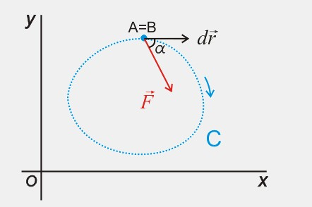
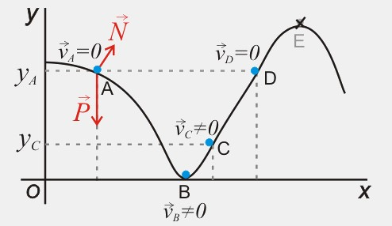

Una fuerza conservativa es aquella cuyo
trabajo depende únicamente de las
posiciones inicial y final de la
partícula y no de la trayectoria que ésta
ha descrito para ir desde la posición
inicial a la final.
Una consecuencia de este hecho
es que el trabajo de una fuerza
conservativa a lo largo de una
trayectoria cerrada es cero:
\( W=\int\vec{F}\,d\vec{r}=0 \)

Si el trabajo de una fuerza conservativa no depende
del camino seguido por la partícula y el punto
final coincide con el inicial, el trabajo de dicha fuerza es cero.
Utilizando la descomposición de Helmholtz una fuerza conservativa puede ser escrita
como el gradiente de una función escalar cambiado de signo:
\(\vec{F}=-\bigtriangledown E_P \)
Dicha función escalar se denomina energía potencial, y
sólo depende de las coordenadas.
Las fuerzas conservativas son muy importantes en Física,
ya que fuerzas como la gravitatoria o la elástica
son conservativas. Como veremos a continuación, cada
una de estas fuerzas lleva asociada su propia energía
potencial.
Puede demostrarse (con ayuda del teorema fundamental
de las integrales de línea) que el trabajo de una
fuerza conservativa viene dado por:
\(W_{A \rightarrow B}=\int_A^B\vec{F}\,d\vec{r} \)
\( =E_{P(A)}-E_{P(B)}=-\Delta E_P \)
Las unidades de energía potencial en el Sistema Internacional son los julios (J).
Por tanto, para una fuerza conservativa podemos igualar las dos expresiones
anteriores y, pasando al primer miembro lo que depende
del estado inicial y al segundo lo del final:
\( E_{P(A)}+E_{K(A)}=E_{P(B)}+E_{K(B)} \)
La suma de la energía cinética y potencial de una partícula se denomina energía mecánica (E).
Si sobre una partícula actúan varias fuerzas conservativas, la energía potencial
será la suma de las energías potenciales asociadas a cada fuerza.
La expresión anterior indica que, cuando sobre una partícula actúan únicamente fuerzas
conservativas, su energía mecánica se conserva, esto es, permanece constante.
Esta es la razón por la cual las fuerzas conservativas tienen este nombre: porque bajo
la acción de dichas fuerzas la energía mecánica se conserva.

En la figura anterior se observa el movimiento de una partícula a lo largo de una pista sin rozamiento.
La normal no hace trabajo por ser perpendicular a la trayectoria, de modo que la única fuerza que
transfiere energía cinética a la partícula es el peso.
Como el peso es una fuerza conservativa, la energía mecánica de la partícula se conserva,
por lo que la suma de su energía cinética y su energía potencial será la misma a lo largo de
todo el recorrido.
En el punto A la partícula sólo tiene energía potencial (no tiene velocidad),
mientras que en el punto B sólo tiene energía cinética, que será igual a la energía potencial
en A. En cualquier otro punto de la trayectoria tendrá una combinación de ambas, pero de tal
manera que la energía total es la misma en todos los puntos. El punto E no es alcanzable por
la partícula, puesto que para llegar a él necesitaría más energía mecánica de la que tiene, pero
la energía mecánica se conserva en esta situación.